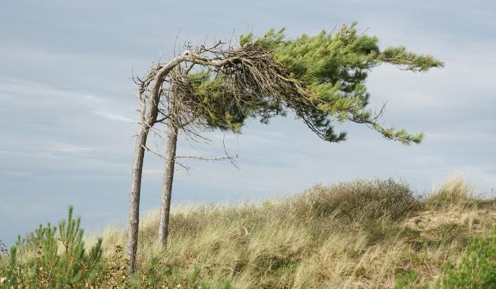
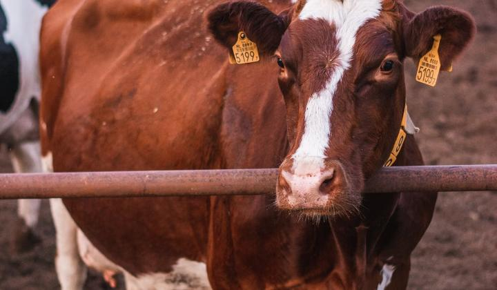

Alerta
Protección Civil del Estado emitió un aviso preventivo por el frente frío número 4: ráfagas de más de 75 km/h en Janos e Ignacio Zaragoza y de más de 55 km/h en Juárez, Chihuahua capital, Cuauhtémoc y Parral, con posibles lluvias con granizo en Juárez. Hay riesgo de tolvaneras en los tramos Ahumada-Juárez, Juárez-Janos y Sueco-Nuevo Casas Grandes. Si va a viajar, maneje con precaución, baje la velocidad y encienda las luces. Ante cualquier emergencia, llame al 911.
Estatal
Borrón y Cuenta Nueva 2026: 95% en noviembre, 80% en diciembre y 70% en enero en adeudos vehiculares, impuestos estatales y licencias. Consulta en ipagos.chihuahua.gob.mx o por WhatsApp al (614) 372-17-00.

Clima
El SMN prevé rachas de 50 a 70 km/h. Hasta el jueves 5, madrugadas de hasta −5 °C en la sierra. Asegura objetos sueltos y abrígate.
Frontera
Una jueza federal de El Paso frenó la obra al otro lado del río. El gobierno de EU pidió a la Suprema Corte levantar la orden; la decisión sigue pendiente.

Local
La Unión Ganadera Regional adelanta la exportación a Estados Unidos. Siguen las gestiones para reabrir el puerto de Ojinaga.
Local
Hasta el momento no hay reporte de cierre en la carretera Chihuahua–Ojinaga. Se recomienda manejar con precaución, respetar los límites de velocidad y atender los avisos de las autoridades, ya que en días recientes se han reportado baches y grietas en algunos tramos de la región. La SSPE mantiene presencia operativa en el tramo Aldama–Ojinaga.
Política
La alianza entre el PAN y el PRI rumbo a las elecciones de 2027 en Chihuahua estaría prácticamente definida; lo que falta es nombrar candidaturas y repartir posiciones. De acuerdo con las señales que han trascendido, el PRI no habría amarrado las presidencias municipales de Cuauhtémoc, Casas Grandes y Ojinaga, que serían de las más disputadas. Movimiento Ciudadano mantiene su postura de competir por separado.